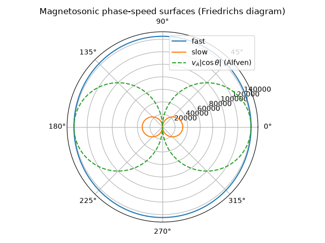

Note
Go to the end to download the full example code.
Alfven waves and the magnetosonic wave-speed diagram#
In 1942, Hannes Alfven proposed that a magnetized, highly conducting fluid should support a wave nobody had previously imagined: magnetic field lines, frozen into the plasma by its high conductivity, behave like strings under tension \(B^2/\mu_0\), plucked sideways by the fluid’s own inertia. The result – the Alfven wave – travels at \(v_A = B/\sqrt{\mu_0\rho}\), purely transverse and non-compressive, and founded magnetohydrodynamics (MHD) as a discipline treating the plasma as a single conducting fluid.
alfven_speed() computes \(v_A\)
directly; magnetosonic_speeds() extends
the idea to the compressive fast and slow modes that appear once
plasma pressure (sound speed \(c_s=\sqrt{\gamma p/\rho}\)) is added
back into the picture. At propagation angle \(\theta\) to
\(\mathbf{B}_0\) the two compressive MHD normal modes solve
which reduce to \(\max(v_A,c_s)\)/\(\min(v_A,c_s)\) along \(\mathbf{B}_0\) (\(\theta=0\)) and to a purely compressive \(\sqrt{v_A^2+c_s^2}\) (fast) with a vanishing slow mode across it (\(\theta=\pi/2\)).
import matplotlib.pyplot as plt
import numpy as np
import physicskit as pk
from physicskit.constants import VACUUM_PERMEABILITY
A magnetized coronal-loop-like plasma#
B, rho = 0.02, 1.6e-8
vA = pk.plasma.alfven_speed(B, rho)
cs = pk.plasma.sound_speed(gamma=5 / 3, p=10.0, rho=rho)
Fast/slow magnetosonic speeds at every angle to B0#
Alfven’s own purely transverse wave is the limit these two compressive modes build on: it sits exactly between them, along B0.
theta = np.linspace(0, 2 * np.pi, 400)
vf, vs = zip(*[pk.plasma.magnetosonic_speeds(vA, cs, th) for th in theta], strict=True)
fig, ax = plt.subplots(subplot_kw={"projection": "polar"})
ax.plot(theta, vf, label="fast")
ax.plot(theta, vs, label="slow")
ax.plot(theta, vA * np.abs(np.cos(theta)), "--", label=r"$v_A|\cos\theta|$ (Alfven)")
ax.set_title("Magnetosonic phase-speed surfaces (Friedrichs diagram)")
ax.legend(loc="upper right")
fig.tight_layout()
plt.show()

A plucked field line: the Alfven pulse propagating and splitting#
Alfven’s own analogy is a field line under tension, plucked sideways. Releasing a transverse pulse from rest and evolving the linearized 1D ideal-MHD induction and momentum equations,
which combine into the non-dispersive wave equation \(\partial_t^2 B_y = v_A^2\partial_x^2 B_y\), shows it split exactly in half and travel outward at \(\pm v_A\) in each direction – the picture reproduced dynamically rather than just asserted.
x = np.linspace(-20, 20, 256, endpoint=False)
By0, vy0 = pk.plasma.alfven_wave_pulse_ic(x, x0=0.0, width=1.0, amplitude=0.1)
anim = pk.plasma.animate_alfven_wave(By0, vy0, x, dt=0.01, steps_per_frame=20, n_frames=40, B0=1.0, rho0=1.0)
plt.show()
Check#
v_A = B / sqrt(mu0 rho), c_s = sqrt(gamma p / rho); the fast and slow speeds satisfy v_f^2 + v_s^2 = v_A^2 + c_s^2 and v_f v_s = v_A c_s |cos(theta)|.
assert abs(vA - B / np.sqrt(VACUUM_PERMEABILITY * rho)) < 1e-9 * vA
assert abs(cs - np.sqrt(5 / 3 * 10.0 / rho)) < 1e-9 * cs
vf, vs = np.array(vf), np.array(vs)
np.testing.assert_allclose(vf**2 + vs**2, vA**2 + cs**2, rtol=1e-10)
np.testing.assert_allclose(vf * vs, vA * cs * np.abs(np.cos(theta)), rtol=1e-8, atol=1e-6 * vA * cs)
Total running time of the script: (0 minutes 6.576 seconds)